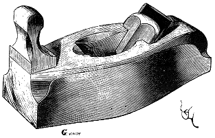

Eugène VIOLLET le DUC
Dictionnaire raisonné du mobilier.
 Figure 1 RABOT, s. m. Lame d'acier aiguisée à l'un de ses bouts, emmanchée obliquement dans une petite pièce de bois oblongue, et servant aux menuisiers à planer les bois. Nous n'avons pas trouvé d'exemples figurés du rabot avant le milieu du XVe siècle, et cependant cet outil (à considérer les oeuvres de menuiserie antérieures à cette époque) devait être en usage depuis longtemps. Le rabot du XVe siècle est muni d'une poignée verticale à l'avant (fig. 1), qui facilite la poussée. Il n'a pas, comme le nôtre aujourd'hui, ses deux flancs parallèles, mais renflés, afin de mieux s'asseoir sur le bois à planer. Les rabots étaient faits de bois de poirier, de charme, d'érable, et façonnés parait-il avec beaucoup de soin, comme tous les outils de cette époque. Le long rabot, ou varlope, employé pour dresser des membrures très longues et relativement minces, ne parait pas dans les monuments figurés avant le XVIe siècle.